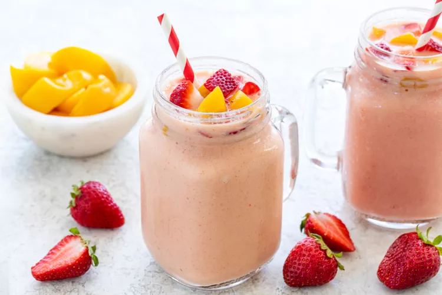

Strawberry Peach Smoothie

This summer-inspired blend of juicy fruits makes for a cool and refreshing
beverage. The fruit and protein combination creates a satisfying
Strawberry Peach Smoothie, ready in just 5 minutes!
As the weather warms up, cool down with a chilled glass of Strawberry
Peach Smoothie. A mixture of ripe fruit, yogurt, and citrus juice makes
for a quick breakfast or midday snack.
Ripe strawberries have a jammy flavor, that’s sweet with a hint of
acidity. When paired with the slightly tart flavor of yellow peaches they
are the perfect pairing.
Strawberry Peach Smoothie Ingredients
- 1/2 cup ice cubes
- 1/2 cup frozen strawberries
- 1/2 cup frozen peaches
- 1/4 cup fresh sliced banana
- 1/4 cup plain, unsweetened Greek yogurt
- 3/4 cup orange juice
Strawberry Peach Smoothie Steps
-
Add ingredients into blender: Add ice cubes, strawberries, peaches,
banana slices, yogurt, and orange juice to the blender.
-
Blend smoothie: Cover and process on medium speed for about 15 to 30
seconds, using the tamper as needed. Increase speed to high for 15 to 30
seconds until the smoothie is thick and smooth. Add juice as needed to
achieve the desired consistency.
- Serve: Pour smoothie in a tall glass and serve immediately.
Home